The matrix is built. Evidence still has veto power.
All 40 primary targets are loadable from canonical source. Acceptance is a separate runtime claim: only the non-rendering router suite is accepted today; 38 native-WebGPU surfaces remain explicitly pending current-adapter capture, timing, lifecycle, and visual review.
canonical28skill-owned labs built from native sourcesupport7focused integrations and mechanism benchesstartup contracts505170 scenarios · 222 mechanisms · 113 tierspreserved47secondary records, none counted as primary proofrendererr185.1exact Three.js revision across the matrixtoolchain8.1.3Vite · Playwright 1.61.1Browser entry, fixed route, local build, capture wiring, canonical source hash.
No GPU timing, lifecycle, or visual claim is promoted without current-adapter evidence.
Five systems. Five ownership stress tests.
The flagships are where individually correct algorithms must share world units, temporal state, signals, render submissions, and final-image ownership without quietly duplicating expensive work.
2fc27a668cad source hash
10 fixed states · 12 runtime proof requirements
Final Image Flight
Camera and motion state feed one shared signal graph for shadows, honest material-context AO, emissive bloom, exposure, grading, and final output.
c1dccbab60bc source hash
10 fixed states · 5 runtime proof requirements
Weathered World
Planet, atmosphere, clouds, oceans, bounded water, precipitation, vegetation, and shadows share units, weather, and one HDR composition.
0610238964bd source hash
10 fixed states · 4 runtime proof requirements
Procedural District
One causal field drives terrain, zoning, wear, wetness, and placement while geometry, buildings, materials, AO, and shadows keep strict ownership.
23fd93054de8 source hash
9 fixed states · 5 runtime proof requirements
Creature Habitat
Creatures, vegetation, local water, weather, camera, shadows, and outline effects exchange contact signals without rewriting static spawn state.
cd1a484962b5 source hash
10 fixed states · 4 runtime proof requirements
Relativistic Space Shot
Curved-ray HDR, analytic motion, pooled effects, shared emissive bloom, exposure, camera jitter, and temporal history converge under one owner graph.
The complete primary lab matrix
Every card is a distinct published base route generated from the canonical source revision. “Evidence pending” means the implementation exists and loads, but its v2 runtime bundle has not yet earned acceptance.
Canonical skill labs
One native implementation surface per rendering skill, plus the non-rendering router and explicit fallback harness.
 Canonical implementation screenshot · runtime evidence pending
Canonical labEvidence pending
Canonical implementation screenshot · runtime evidence pending
Canonical labEvidence pending
Explicit WebGPU Fallback Teaching Harness
Three.js Compatibility Fallbacks
7 scenarios · 6 mechanisms · 0 tiers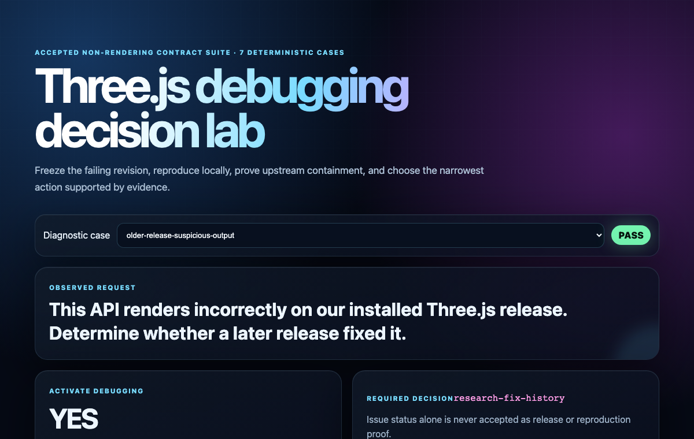
Deterministic contract-lab screenshot Canonical labAcceptedThree.js Debugging Decision Lab
Three.js Debugging
7 scenarios · 5 mechanisms · 0 tiers Canonical capture Runtime evidence pendingb81b7b546366 source hash
16 fixed states · 6 runtime proof requirements
Canonical labEvidence pending
Node Selective Bloom
Bloom
6 scenarios · 6 mechanisms · 4 tiers Deterministic contract-lab screenshot
Canonical labAccepted
Deterministic contract-lab screenshot
Canonical labAccepted
Skill Router Manifest Lab
Three.js WebGPU/TSL Choose Skills
16 scenarios · 8 mechanisms · 0 tiers Canonical capture Runtime evidence pending9218a7322fe2 source hash
15 fixed states · 5 runtime proof requirements
Canonical labEvidence pending
Semantic Mesh Writer
Procedural Geometry
6 scenarios · 6 mechanisms · 3 tiers Canonical capture Runtime evidence pending047eef14e678 source hash
13 fixed states · 3 runtime proof requirements
Canonical labEvidence pending
Native WebGPU Structured Ash Growth
Procedural Vegetation
6 scenarios · 4 mechanisms · 3 tiers Canonical capture Runtime evidence pending88f02b547cf8 source hash
16 fixed states · 9 runtime proof requirements
Canonical labEvidence pending
TSL Curved Ray
Black Holes and Space Effects
6 scenarios · 6 mechanisms · 4 tiers Canonical capture Runtime evidence pending6b8c31982015 source hash
15 fixed states · 7 runtime proof requirements
Canonical labEvidence pending
TSL Procedural PBR
Procedural Materials
6 scenarios · 6 mechanisms · 3 tiers Canonical capture Runtime evidence pendinga49e6113d3fe source hash
11 fixed states · 6 runtime proof requirements
Canonical labEvidence pending
WebGPU Bounded Water
Water Optics
1 scenarios · 6 mechanisms · 4 tiers Canonical capture Runtime evidence pendingef8576bd7bb4 source hash
21 fixed states · 9 runtime proof requirements
Canonical labEvidence pending
Native WebGPU Cached Clipmap Shadow Lab
Scalable Real-Time Shadows
9 scenarios · 9 mechanisms · 3 tiers Canonical capture Runtime evidence pending65da557ed023 source hash
10 fixed states · 7 runtime proof requirements
Canonical labEvidence pending
WebGPU Camera Rig
Camera Controls And Rigs
1 scenarios · 6 mechanisms · 3 tiers Canonical capture Runtime evidence pending6203a4de2601 source hash
14 fixed states · 3 runtime proof requirements
Canonical labEvidence pending
Native WebGPU Dense Grass
Procedural Vegetation
7 scenarios · 3 mechanisms · 4 tiers Canonical capture Runtime evidence pending4a896359be4a source hash
14 fixed states · 3 runtime proof requirements
Canonical labEvidence pending
WebGPU Exposure Color Pipeline
Exposure And Color Grading
5 scenarios · 6 mechanisms · 3 tiers Canonical capture Runtime evidence pending17514de94736 source hash
11 fixed states · 8 runtime proof requirements
Canonical labEvidence pending
WebGPU FFT Ocean
Spectral Ocean
1 scenarios · 6 mechanisms · 4 tiers Canonical capture Runtime evidence pending555355c7341f source hash
15 fixed states · 5 runtime proof requirements
Canonical labEvidence pending
WebGPU Field Bake
Procedural Fields
6 scenarios · 6 mechanisms · 3 tiers Canonical capture Runtime evidence pendingd50e5b0ce11f source hash
10 fixed states · 4 runtime proof requirements
Canonical labEvidence pending
WebGPU Image Pipeline
Image Pipeline
1 scenarios · 6 mechanisms · 3 tiers Canonical capture Runtime evidence pending551de40c2730 source hash
15 fixed states · 6 runtime proof requirements
Canonical labEvidence pending
Native WebGPU LUT Atmosphere
Sky, Atmosphere, and Haze
6 scenarios · 6 mechanisms · 3 tiers Canonical capture Runtime evidence pending7ad7958a7bf3 source hash
15 fixed states · 5 runtime proof requirements
Canonical labEvidence pending
WebGPU Material Slot Compiler
Procedural Buildings and Cities
6 scenarios · 6 mechanisms · 3 tiers Canonical capture Runtime evidence pending20fb14a2e099 source hash
16 fixed states · 6 runtime proof requirements
Canonical labEvidence pending
WebGPU Node GTAO
Ambient Contact Shading
7 scenarios · 6 mechanisms · 3 tiers Canonical capture Runtime evidence pendingacc472f7c027 source hash
17 fixed states · 7 runtime proof requirements
Canonical labEvidence pending
WebGPU Pooled Effects
Particles, Trails, and Effects
7 scenarios · 7 mechanisms · 3 tiers Canonical capture Runtime evidence pending49685873c12a source hash
17 fixed states · 5 runtime proof requirements
Canonical labEvidence pending
WebGPU Procedural Creature Lab
Procedural Creatures
7 scenarios · 7 mechanisms · 3 tiers Canonical capture Runtime evidence pending19124fd44498 source hash
12 fixed states · 7 runtime proof requirements
Canonical labEvidence pending
WebGPU Procedural Timelines
Procedural Motion Systems
3 scenarios · 6 mechanisms · 3 tiers Canonical capture Runtime evidence pending6c5063ccb8e9 source hash
17 fixed states · 3 runtime proof requirements
Canonical labEvidence pending
Native WebGPU Quadtree Planet
Procedural Planets
7 scenarios · 7 mechanisms · 3 tiers Canonical capture Runtime evidence pending9e552daa3e86 source hash
10 fixed states · 8 runtime proof requirements
Canonical labEvidence pending
WebGPU Rain Snow And Wet Surfaces
Rain, Snow, and Wet Surfaces
1 scenarios · 6 mechanisms · 3 tiers Canonical capture Runtime evidence pendinge541d9f92d87 source hash
10 fixed states · 6 runtime proof requirements
Canonical labEvidence pending
WebGPU Touch History Frost
Dynamic Surface Effects
1 scenarios · 6 mechanisms · 3 tiers Canonical capture Runtime evidence pending5c5f8a86ef59 source hash
11 fixed states · 5 runtime proof requirements
Canonical labEvidence pending
WebGPU Tower Ship Sculptor
Three.js Object Sculptor
3 scenarios · 5 mechanisms · 3 tiers Canonical capture Runtime evidence pendingc1ab97a032f3 source hash
19 fixed states · 4 runtime proof requirements
Canonical labEvidence pending
Native WebGPU validation harness
Visual Validation
8 scenarios · 6 mechanisms · 5 tiers Canonical capture Runtime evidence pending7f234f0be198 source hash
15 fixed states · 5 runtime proof requirements
Canonical labEvidence pending
Native WebGPU Weather Volume Clouds
Volumetric Clouds
4 scenarios · 7 mechanisms · 4 tiersCross-skill flagships
The five ownership-critical scenes where independent systems must compose without duplicate render, signal, tone-map, or output owners.
2fc27a668cad source hash
10 fixed states · 12 runtime proof requirements
IntegrationEvidence pending
Final Image Flight
Image Pipeline
1 scenarios · 6 mechanisms · 3 tiers Canonical capture Runtime evidence pendingc1dccbab60bc source hash
10 fixed states · 5 runtime proof requirements
IntegrationEvidence pending
Weathered World
Image Pipeline
1 scenarios · 6 mechanisms · 3 tiers Canonical capture Runtime evidence pending0610238964bd source hash
10 fixed states · 4 runtime proof requirements
IntegrationEvidence pending
Procedural District
Image Pipeline
1 scenarios · 6 mechanisms · 3 tiers Canonical capture Runtime evidence pending23fd93054de8 source hash
9 fixed states · 5 runtime proof requirements
IntegrationEvidence pending
Creature Habitat
Image Pipeline
1 scenarios · 5 mechanisms · 3 tiers Canonical capture Runtime evidence pendingcd1a484962b5 source hash
10 fixed states · 4 runtime proof requirements
IntegrationEvidence pending
Relativistic Space Shot
Image Pipeline
1 scenarios · 6 mechanisms · 3 tiersFocused integrations and benches
Five focused integration hosts and two mechanism benches that prove temporal, AO, vegetation, precipitation, and shadow composition.
4d88113f290e source hash
8 fixed states · 7 runtime proof requirements
IntegrationEvidence pending
Image Pipeline and Material-context AO Integration
Ambient Contact Shading
2 scenarios · 3 mechanisms · 3 tiers Canonical capture Runtime evidence pending5de5585573ea source hash
9 fixed states · 3 runtime proof requirements
IntegrationEvidence pending
Integration Precipitation Image Pipeline
Rain, Snow, and Wet Surfaces
2 scenarios · 4 mechanisms · 3 tiers Canonical capture Runtime evidence pendingf3f47206aa6c source hash
10 fixed states · 3 runtime proof requirements
IntegrationEvidence pending
Integration Temporal Surface
Dynamic Surface Effects
2 scenarios · 5 mechanisms · 3 tiers Canonical capture Runtime evidence pending40940db67adf source hash
9 fixed states · 6 runtime proof requirements
Mechanism benchEvidence pending
WebGPU Directional Shadow Architecture Bench
Scalable Real-Time Shadows
4 scenarios · 4 mechanisms · 1 tiers Canonical capture Runtime evidence pending27394576b055 source hash
5 fixed states · 6 runtime proof requirements
IntegrationEvidence pending
WebGPU Cached Shadow Pipeline Integration
Scalable Real-Time Shadows
1 scenarios · 3 mechanisms · 1 tiers Canonical capture Runtime evidence pending488b22e08495 source hash
3 fixed states · 3 runtime proof requirements
Mechanism benchEvidence pending
WebGPU Temporal History
Image Pipeline
1 scenarios · 1 mechanisms · 1 tiers Canonical capture Runtime evidence pending319844410625 source hash
8 fixed states · 4 runtime proof requirements
IntegrationEvidence pending
Host-Owned Planet, Terrain, Dense Grass, and Ash Integration
Procedural Vegetation
2 scenarios · 3 mechanisms · 3 tiersThe 27-skill expert system
Each skill owns a bounded technical domain. Cards report implementation surface and evidence separately, so substantial source work is visible without laundering it into a runtime claim.
Planning and Validation
Route requests to the right experts, diagnose version-dependent failures, and prove results with reproducible evidence.
Three.js WebGPU/TSL Choose Skills
Choose the smallest expert skill set and the correct rendering architecture for general-purpose Three.js WebGPU/TSL work: scientific visualization, product/configurator scenes, architecture, cinematic art, digital twins, dense data scenes, and procedural worlds. Use when a request spans geometry, fields, materials, simulation, cross-skill physics coupling, scale, temporal effects, shared passes, final-image treatment, or sustained low-end/mobile performance.
02Accepted evidenceThree.js Debugging
Diagnose unexpected Three.js runtime, rendering, API, asset, and version-dependent behavior. Use when observed output disagrees with expected behavior, installed source, types, documentation, or examples; when a regression or known upstream issue may exist; when a project is behind and a later fix may justify upgrading; or when choosing among an application fix, dependency upgrade, bounded workaround, upstream report, and blocker. Do not use for ordinary scene design without a concrete failure, suspicious behavior, or audit request.
03Native evidence pendingVisual Validation
Validate advanced Three.js WebGPU/TSL scenes with falsifiable visual contracts, mechanism diagnostics, sustained CPU/GPU timing, refresh-derived budgets, quality-governor traces, tile-GPU resource models, visual-error metrics, leak loops, and stable JSON+PNG evidence.
04Native evidence pendingThree.js Compatibility Fallbacks
Use only for teaching how to apply fallback when WebGPU is unavailable after the user explicitly requests it. Never activate for canonical WebGPU/TSL work, low-end tuning, mobile optimization, capability preflight, or general target support.
Cameras, Lighting, and Final Image
Who owns depth, tone mapping, and the last pass — the difference between a demo and an image.
Camera Controls And Rigs
Build general-purpose Three.js WebGPU/TSL camera systems for product inspection, architecture, scientific visualization, geospatial scenes, and authored cinematography. Use for bounds-derived framing, perspective and orthographic projection, controls/shot ownership, temporal jitter, camera-relative coordinates, large-world precision, constraints, and lifecycle restoration.
06Native evidence pendingScalable Real-Time Shadows
Design scalable directional cast shadows for Three.js r185 WebGPU/TSL scenes. Use for bounded shadow projections, cascades, tiled array shadows, cached clipmaps, stable texel snapping, filter/bias footprints, cache invalidation, caster parity, binding pressure, and sustained mobile budgets.
07Native evidence pendingAmbient Contact Shading
Design and implement ambient visibility in Three.js r185 WebGPU/TSL, including the forward-lighting placement cost, GTAO input/reconstruction choices, temporal gates, mobile bandwidth, and optional bent normals.
08Native evidence pendingBloom
Design workload-selected bloom in Three.js r185 WebGPU/TSL, choosing physical HDR scene bloom versus selective MRT contribution, with exact BloomNode pyramid costs, transparent blending rules, PSF limits, and mobile/tile-GPU gates.
09Native evidence pendingExposure And Color Grading
Build a workload-selected WebGPU/TSL exposure and grading path in Three.js. Use for fixed, sampled, reduced, or histogram luminance metering; GPU-resident EV adaptation; explicit tone-map/output ownership; and domain-correct lut3D grading chosen from measured scene and target requirements.
10Native evidence pendingImage Pipeline
Build a minimal, workload-selected WebGPU/TSL final-image pipeline for advanced Three.js scenes. Use for RenderPipeline ownership; conditional pass()/mrt() depth, normal, albedo, emissive, velocity, and history signals; GTAONode, BloomNode, TRAANode, exposure, tone mapping, 3D LUT grading, outputColorTransform, diagnostics, and measured quality/performance tradeoffs.
Worlds and Environments
Skies, oceans, weather, and water that share causes instead of fighting each other.
Sky, Atmosphere, and Haze
Implement physically coherent sky, atmosphere, and haze in Three.js r185 native WebGPU/TSL using unit-consistent scattering LUTs, depth-aware aerial perspective, ellipsoid-aware geometry, explicit invalidation, and measured pipeline evidence.
12Native evidence pendingVolumetric Clouds
Implement workload-selected volumetric cloud systems in Three.js r185 with WebGPURenderer, TSL, NodeMaterial, node RenderPipeline passes, compute/storage textures, temporal reprojection, cloud shadows, and error-bounded quality tiers.
13Native evidence pendingSpectral Ocean
Build broad-band offshore procedural oceans in Three.js r185 WebGPU/TSL using dimensioned directional spectra, compute FFT cascades, StorageTexture ping-pongs, exact spectral derivatives, displaced-surface Jacobians, transported foam, water optics, CPU query bounds, falsifiable GPU evidence, and phase-resolved or phase-averaged handoff to a separate bathymetry-aware coastal owner.
14Native evidence pendingWater Optics
Build workload-selected analytic, bounded, and coastal water in Three.js r185 WebGPU/TSL. Use for generated archipelagos and shorelines, bathymetry-aware shoaling/refraction, mild-slope or shallow-water wet/dry solver selection, sparse active tiles, StorageTexture heightfields, exact displacement and normals, local disturbances, transported foam and wetness, receiver-space caustics, depth-aware refraction, absorption, Fresnel, and offshore/nearshore handoffs.
15Native evidence pendingRain, Snow, and Wet Surfaces
Build coupled WebGPU/TSL rain, snow, and wet-surface systems in Three.js. Use for compute-driven falling snow, rain streaks, snow accumulation, model snow caps, wet asphalt puddles, procedural or generated ripple normals, splash flipbooks, shared weather envelopes, and surface wetness or coverage transitions.
Procedural Content
Fields, materials, geometry, object reconstruction, buildings, planets, vegetation, creatures — authored systems, not noise soup.
Procedural Fields
Build coherent WebGPU/TSL procedural scalar and vector fields for Three.js. Use for local terrain and archipelago support, metric coast distance and frames, coupled elevation and bathymetry, drainage/exposure and placement factors, NodeMaterials, compute bakes, storage textures, planets, wear, biomes, clouds, water masks, displacement, roughness, normals, domain warping, and visuals where many channels derive from shared causes.
17Native evidence pendingProcedural Materials
Author workload-selected WebGPU/TSL procedural materials in Three.js. Use for coupled terrain/coast/seabed response bundles, grass, rock, dry/wet sand and reef identities, NodeMaterial PBR fields, atlas and triplanar filtering, footprint filtering, specular AA, terrain wetness, stylized palette/facet policies, emissive or raymarched fields, per-instance dissolve, derivative normals, and explicit physical-response bundles.
18Native evidence pendingProcedural Geometry
Build workload-selected procedural mesh systems in Three.js r185 WebGPU/TSL. Use for local terrain/coast contour compilation, terraced caps, cliffs, beaches, seabeds, sculpted profiles, oriented branch rings, semantic indexed BufferGeometry writers, explicit material slots, BatchedMesh versus InstancedMesh decisions, typed-array update paths, NodeMaterial surfaces, and projected-error geometry budgets.
19Native evidence pendingThree.js Object Sculptor
Reconstruct an object from an attached image, screenshot, URL, or local image as a quality-gated, action-ready procedural Three.js model. Use for image suitability checks, ObjectSculptSpec extraction, geometry/material/lighting planning, code-native model implementation, staged visual comparison, animation-ready hierarchy, or destruction-ready component design. Adapted from Three.js Object Sculptor by Vinh Hiển.
20Native evidence pendingProcedural Buildings and Cities
Build authored procedural buildings, facades, cities, and semantic site-asset assemblies in Three.js r185 WebGPU/TSL. Use for massing grammars and for deterministic placement/compilation of supplied or separately generated ruin, dock, boat, rock, vegetation, and prop families; anchors, sockets, exclusions, exposed-edge analysis, profiles, ornaments, material-slot BatchedMesh or merged BufferGeometry, stable IDs, NodeMaterial identities, spatial paging, LOD, and asset-manifest validation.
21Native evidence pendingProcedural Planets
Author scalable procedural planetary bodies in Three.js r185 native WebGPU/TSL with explicit cube-sphere/clipmap selection, conservative error-driven LOD, balanced transitions, shared causal fields, validated normals, instanced/indirect submission, and explicit atmosphere handoff.
22Native evidence pendingProcedural Vegetation
Generate authored procedural trees, grass, and vegetation in Three.js r185 with WebGPURenderer, TSL, and NodeMaterial. Use for terrain/coastal ecology, windward/leeward and salt/moisture placement, deterministic chunk-safe populations, species presets, trunks, branches, roots, canopies, leaf cards, trellises, rooted wind, optional compute/storage, chunked LOD and impostors, and vegetation diagnostics.
23Native evidence pendingProcedural Creatures
Build workload-selected procedural and generated creatures in Three.js r185 WebGPU/TSL. Use for spec-driven bodies, semantic rigs, field-extracted skinned reference meshes, diagnostic SDF shells, procedural gait/hop/flight/swim locomotion, support-relative foot planting, 2-bone IK, verlet appendages, repeated populations, deterministic creature labs, and genetic variation. Not for imported glTF skinned-clip pipelines.
Motion and Effects
Kinematics, particles, surface history, and spacetime — motion with frame-rate-independent discipline.
Procedural Motion Systems
Build representation-selected procedural motion systems in Three.js WebGPU/TSL. Use for launch kinematics, gravity turns, staging, spin docking, target-frame decomposition, spring-follow motion, rotating-frame alignment, analytic transform timelines, frame-rate-independent response, storage/instanced animation, and quaternion control.
25Native evidence pendingParticles, Trails, and Effects
Author workload-selected WebGPU/TSL particles, trails, and real-time effects in Three.js. Use for flow-conforming shells and wakes, reentry plasma, instanced sparks, timed dissolves, GPU particle pools, deterministic compaction, and conditional scene-relative HDR emission signals.
26Native evidence pendingDynamic Surface Effects
Build dynamic screen-space surface effects in Three.js r185 WebGPU/TSL. Use for StorageTexture touch-history ping-pong, dt-correct frost/thaw masks, reduced-resolution node blur, static crystalline structure targets, and two-scale TSL normal refraction.
27Native evidence pendingBlack Holes and Space Effects
Build WebGPU/TSL black holes, wormholes, accretion disks, and curved-ray space effects in Three.js. Use for black-hole lensing, accretion disks, wormholes, curved-ray integration, procedural star fields, relativistic-looking distortion, bounded volumetric structures, and GPU effects that need controlled numerical integration.
A validation protocol designed to reject pretty lies.
The schema-v2 contract separates what was authored, derived, measured, and gated; its verdicts cannot collapse missing GPU timing or mechanism proof into an aggregate pass.
numeric provenanceFour labels
Authored · Derived · Measured · Gated. Every normative number names where it came from.
claim verdictsFour outcomes
PASS · FAIL · INSUFFICIENT_EVIDENCE · NOT_CLAIMED. Silence cannot masquerade as success.
bundle14 ledgers
Pipeline, timing, resources, bandwidth, errors, lifecycle, mechanisms, and the exact visual contract travel together.
readback256-byte alignment
Odd-size and padded-row tests prevent valid WebGPU frames from becoming striped or falsely nonblank PNGs.
single-owner graphOne final image path
- scene HDR
- shared MRT
- physical stages
- exposure
- tone map
- output
lifecycle50–100 cycles
Create, render, resize, switch mode and tier, then dispose—measured repeatedly rather than inferred from one clean frame.
mutationsFailure must fail
Bad stride, duplicate owners, false diagnostics, self-comparison, leaked storage, and missing timestamps are blocking cases.
Install the whole research stack.
The router selects the smallest relevant expert set after installation. Directory presence is never interpreted as runtime proof; the registry remains the public source of coverage truth.
List the pack, then install all top-level skills for your agent.
npx skills@latest add linegel/threejs-complete-set-of-skill --list
npx skills@latest add linegel/threejs-complete-set-of-skill --skill '*'Harness-specific installation recipes 4 targets
skills CLI
Use the open skills installer to list the pack, then install every top-level threejs-* skill folder as one coherent graphics skill pack for your selected agent.
npx skills@latest add linegel/threejs-complete-set-of-skill --list
npx skills@latest add linegel/threejs-complete-set-of-skill --skill '*'Claude Code
Install through skills CLI, or symlink/copy the skill folders into a personal or project skills directory.
npx skills@latest add linegel/threejs-complete-set-of-skill --skill '*' -a claude-code -g -y
# manual fallback:
git clone https://github.com/linegel/threejs-complete-set-of-skill.git
ln -s "$PWD/threejs-complete-set-of-skill"/threejs-* ~/.claude/skills/Codex CLI
Install the whole pack through skills CLI when available. For local checkouts, keep AGENTS.md pointed at the repo-local threejs-*/SKILL.md files as the authoritative source.
npx skills@latest add linegel/threejs-complete-set-of-skill --skill '*' -a codex -g -y
# local checkout fallback: read ./threejs-*/SKILL.md when a task matchesCursor / Gemini / generic agents
Any harness that can read local files works: each skill is a self-contained folder with SKILL.md, references/, agents/, and examples/. The machine-readable index lives at skills.json; a plain-text overview at llms.txt.
git submodule add https://github.com/linegel/threejs-complete-set-of-skill.git skills/threejs
curl -s https://threejs-skills.com/skills.json | jq '.install.source, .skills[].name'
curl -s https://threejs-skills.com/llms.txtHistorical evidence and generated inputs
These frames are preserved diagnostic or asset previews. They are useful inputs and historical context, but none become canonical renderer evidence merely by looking convincing.
Open the preview archive 14 frames


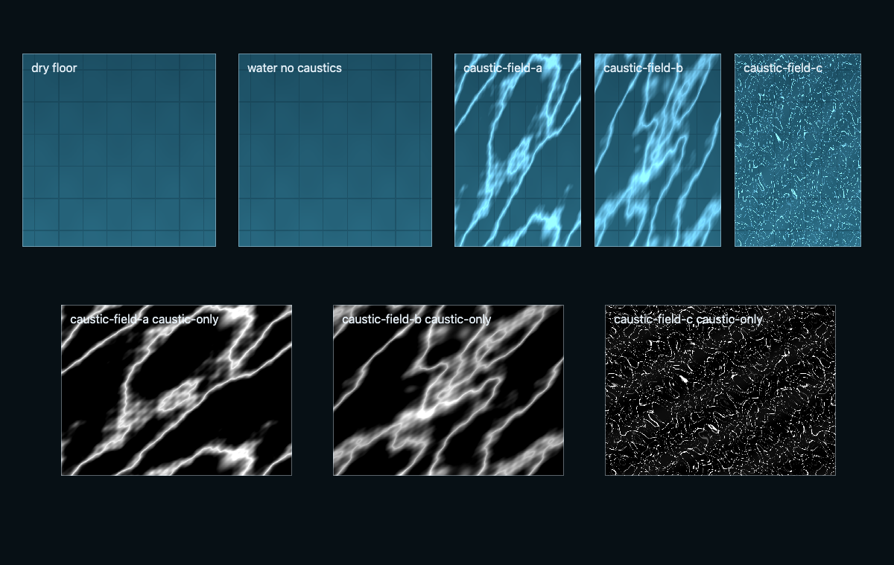


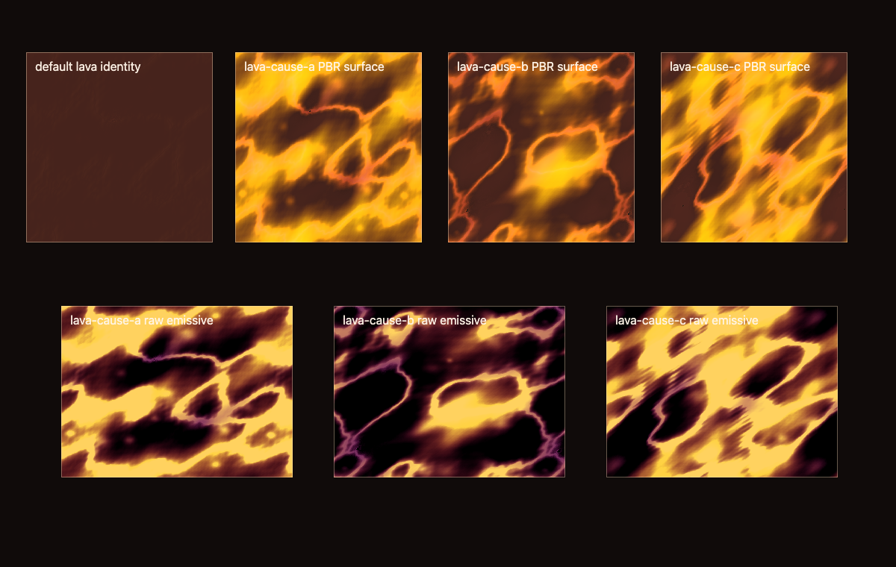


Preserved secondary surfaces
Concept proxies, generated-asset previews, fixtures, and the legacy reference retain their public URLs and explicit limitations. They contribute exactly zero primary acceptance.
Open the secondary archive 26 published previews
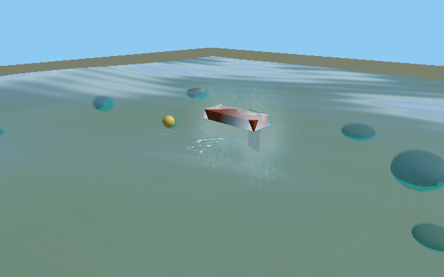
Concept proxy preview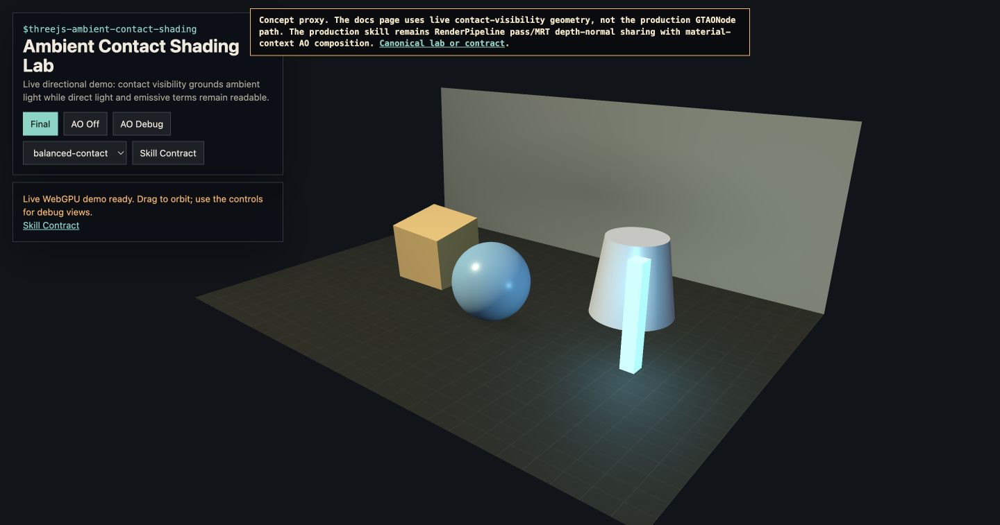
Concept proxy preview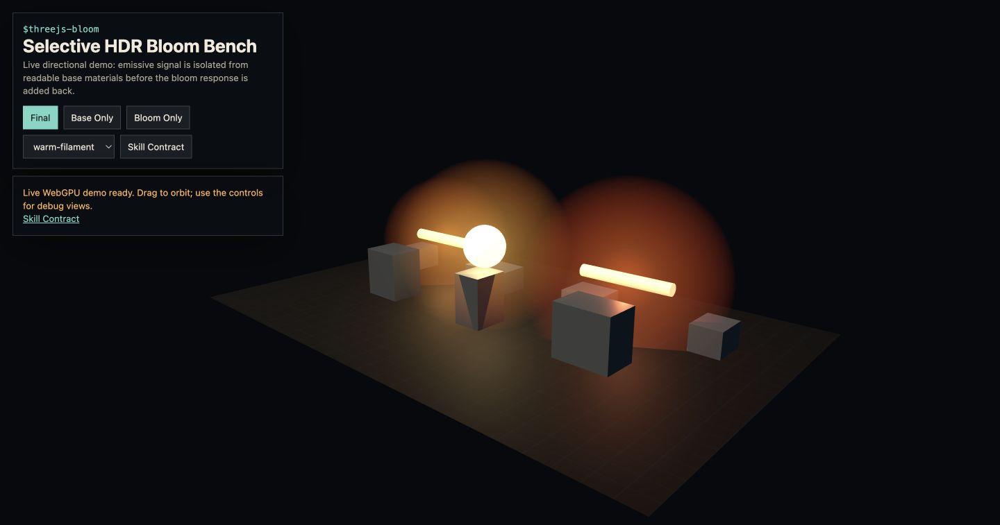
Concept proxy preview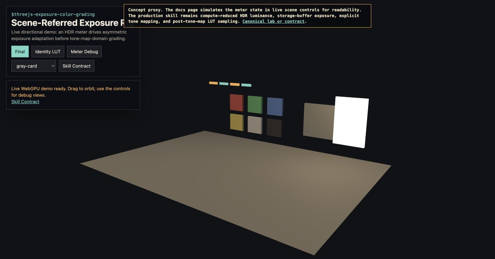
Concept proxy preview Concept proxy preview
Concept proxy preview
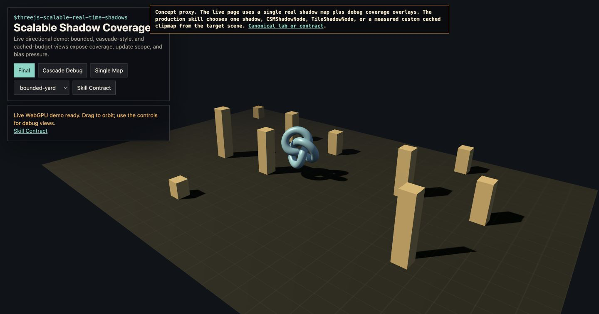
Concept proxy preview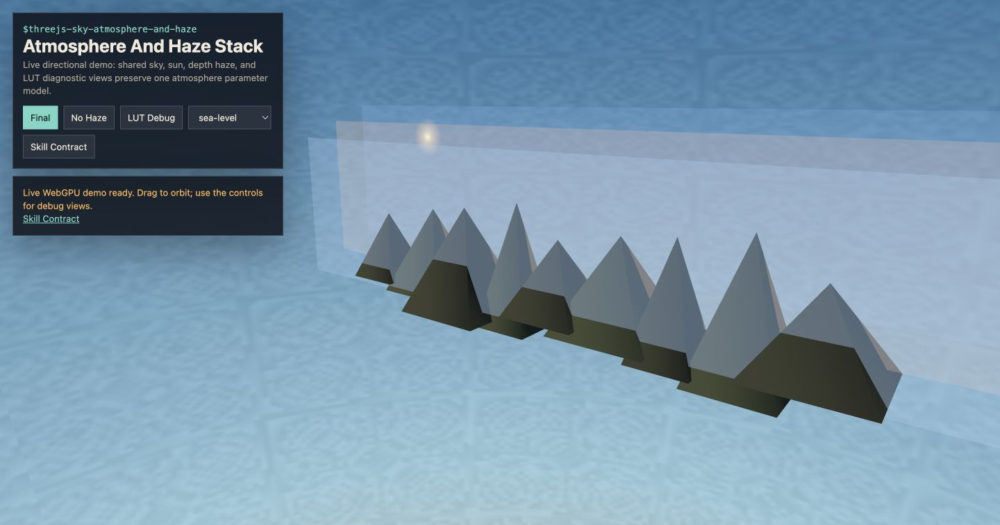
Concept proxy preview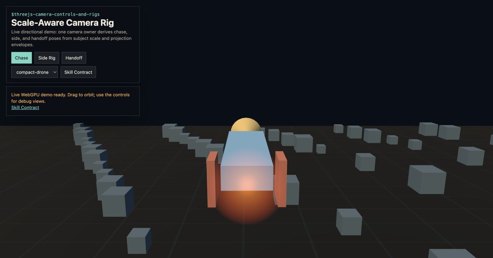
Concept proxy preview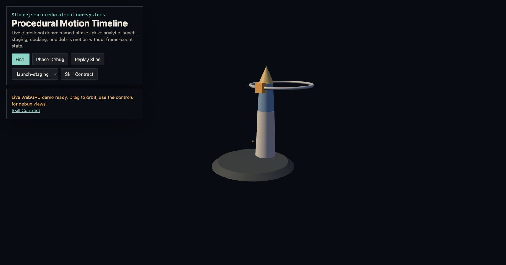
Concept proxy preview Concept proxy preview
Concept proxy preview
 Concept proxy preview
Concept proxy preview
 Concept proxy preview
Concept proxy preview
 Concept proxy preview
Concept proxy preview
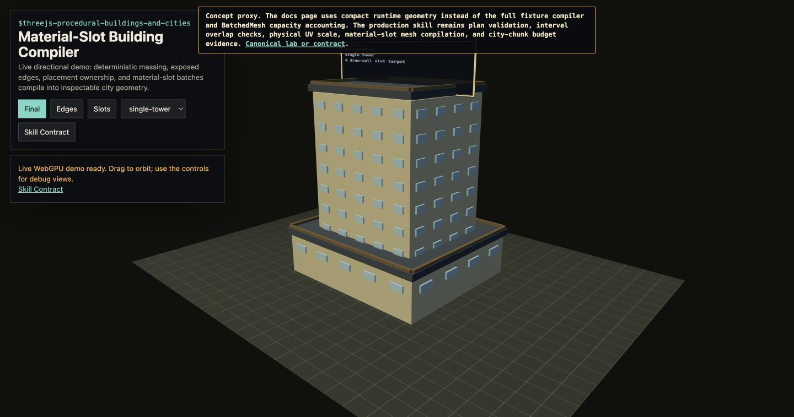
Concept proxy preview Concept proxy preview
Concept proxy preview
 Concept proxy preview
Generated asset preview preview
Generated asset preview preview
Generated asset preview preview
Generated asset preview preview
Generated asset preview preview
Generated asset preview preview
Generated asset preview preview
Generated asset preview preview
Concept proxy preview
Generated asset preview preview
Generated asset preview preview
Generated asset preview preview
Generated asset preview preview
Generated asset preview preview
Generated asset preview preview
Generated asset preview preview
Generated asset preview preview